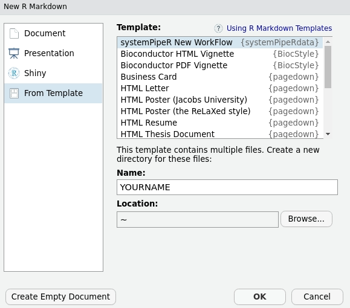

vignettes/systemPipeRdata.Rmd
systemPipeRdata.RmdNote: the most recent version of this vignette can be found here.
Note: if you use systemPipeR and systemPipeRdata in published research, please cite:
Backman, T.W.H and Girke, T. (2016). systemPipeR: Workflow and Report Generation Environment. BMC Bioinformatics, 17: 388. 10.1186/s12859-016-1241-0.
systemPipeRdata is a helper package to generate with a single command workflow templates that are intended to be used by its parent package systemPipeR (H Backman and Girke 2016). The systemPipeR project provides a suite of R/Bioconductor packages for designing, building and running end-to-end analysis workflows on local machines, HPC clusters and cloud systems, while generating at the same time publication quality analysis reports.
To test workflows quickly or design new ones from existing templates, users can generate with a single command workflow instances fully populated with sample data and parameter files required for running a chosen workflow. Pre-configured directory structure of the workflow environment and the sample data used by systemPipeRdata are described here.
The systemPipeRdata package is available at Bioconductor and can be installed from within R as follows:
if (!requireNamespace("BiocManager", quietly = TRUE)) install.packages("BiocManager")
BiocManager::install("systemPipeRdata")Also, it is possible to install the development version from Bioconductor.
BiocManager::install("systemPipeRdata", version = "devel", build_vignettes = TRUE,
dependencies = TRUE) # Installs Devel version from Bioconductor
library("systemPipeRdata") # Loads the packageLoad one of the available workflows into your current working directory. The following does this for the varseq workflow template. The name of the resulting workflow directory can be specified under the mydirname argument. The default NULL uses the name of the chosen workflow. An error is issued if a directory of the same name and path exists already.
genWorkenvir(workflow = "systemPipeR/SPvarseq", mydirname = "varseq")
setwd("varseq")On Linux and OS X systems the same can be achieved from the command-line of a terminal with the following commands.
$ Rscript -e "systemPipeRdata::genWorkenvir(workflow='systemPipeR/SPvarseq', mydirname='varseq')"A collection of workflow templates are available, and it is possible to browse the current availability, as follows:
availableWF(github = TRUE)This function returns the list of workflow templates available within the package and systemPipeR Organization on GitHub. Each one listed template can be created as described above.
The workflow template choose from Github will be installed as an R package, and also it creates the environment with all the settings and files to run the demo analysis.
genWorkenvir(workflow="systemPipeR/SPrnaseq", mydirname="NULL")
setwd("SPrnaseq")Besides, it is possible to choose different versions of the workflow template, defined through other branches on the GitHub Repository. By default, the master branch is selected, however, it is possible to define a different branch with the ref argument.
genWorkenvir(workflow="systemPipeR/SPrnaseq", ref = "singleMachine")
setwd("SPrnaseq")Also, it is possible to download a specific workflow script for your analysis. The URL can be specified under url argument and the R Markdown file name in the urlname argument. The default NULL copies the current version available in the chose template.
genWorkenvir(workflow="systemPipeR/SPrnaseq", url = "https://raw.githubusercontent.com/systemPipeR/systemPipeRNAseq/cluster/vignettes/systemPipeRNAseq.Rmd",
urlname = "rnaseq_V-cluster.Rmd")
setwd("rnaseq")It is possible to create a new workflow structure from RStudio menu File -> New File -> R Markdown -> From Template -> systemPipeR New WorkFlow. This interactive option creates the same environment as demonstrated above.
Figure 1: Selecting workflow template within RStudio.
The workflow templates generated by genWorkenvir contain the following preconfigured directory structure:
CWL param and input.yml files need to be in the same subdirectory.Note: Directory names are indicated in green. Users can change this structure as needed, but need to adjust the code in their workflows accordingly.
Figure 2: systemPipeR’s preconfigured directory structure.
Next, run from within R the chosen sample workflow by executing the code provided in the corresponding *.Rmd template file. Much more detailed information on running and customizing systemPipeR workflows is available in its overview vignette here. This vignette can also be opened from R with the following command.
library("systemPipeR") # Loads systemPipeR which needs to be installed via BiocManager::install() from Bioconductor
vignette("systemPipeR", package = "systemPipeR")The location of the sample data provided by systemPipeRdata can be returned as a list.
pathList()## $targets
## [1] "/tmp/Rtmp6btZ98/temp_libpath12422253345dc/systemPipeRdata/extdata/param/targets.txt"
##
## $targetsPE
## [1] "/tmp/Rtmp6btZ98/temp_libpath12422253345dc/systemPipeRdata/extdata/param/targetsPE.txt"
##
## $annotationdir
## [1] "/tmp/Rtmp6btZ98/temp_libpath12422253345dc/systemPipeRdata/extdata/annotation/"
##
## $fastqdir
## [1] "/tmp/Rtmp6btZ98/temp_libpath12422253345dc/systemPipeRdata/extdata/fastq/"
##
## $bamdir
## [1] "/tmp/Rtmp6btZ98/temp_libpath12422253345dc/systemPipeRdata/extdata/bam/"
##
## $paramdir
## [1] "/tmp/Rtmp6btZ98/temp_libpath12422253345dc/systemPipeRdata/extdata/param/"
##
## $workflows
## [1] "/tmp/Rtmp6btZ98/temp_libpath12422253345dc/systemPipeRdata/extdata/workflows/"
##
## $chipseq
## [1] "/tmp/Rtmp6btZ98/temp_libpath12422253345dc/systemPipeRdata/extdata/workflows/chipseq/"
##
## $rnaseq
## [1] "/tmp/Rtmp6btZ98/temp_libpath12422253345dc/systemPipeRdata/extdata/workflows/rnaseq/"
##
## $riboseq
## [1] "/tmp/Rtmp6btZ98/temp_libpath12422253345dc/systemPipeRdata/extdata/workflows/riboseq/"
##
## $varseq
## [1] "/tmp/Rtmp6btZ98/temp_libpath12422253345dc/systemPipeRdata/extdata/workflows/varseq/"
##
## $new
## [1] "/tmp/Rtmp6btZ98/temp_libpath12422253345dc/systemPipeRdata/extdata/workflows/new/"## R Under development (unstable) (2021-02-04 r79940)
## Platform: x86_64-pc-linux-gnu (64-bit)
## Running under: Ubuntu 20.04.2 LTS
##
## Matrix products: default
## BLAS: /usr/lib/x86_64-linux-gnu/blas/libblas.so.3.9.0
## LAPACK: /home/dcassol/src/R-devel/lib/libRlapack.so
##
## locale:
## [1] LC_CTYPE=en_US.UTF-8 LC_NUMERIC=C
## [3] LC_TIME=en_US.UTF-8 LC_COLLATE=en_US.UTF-8
## [5] LC_MONETARY=en_US.UTF-8 LC_MESSAGES=en_US.UTF-8
## [7] LC_PAPER=en_US.UTF-8 LC_NAME=C
## [9] LC_ADDRESS=C LC_TELEPHONE=C
## [11] LC_MEASUREMENT=en_US.UTF-8 LC_IDENTIFICATION=C
##
## attached base packages:
## [1] stats graphics grDevices utils datasets
## [6] methods base
##
## other attached packages:
## [1] systemPipeRdata_1.19.9 BiocStyle_2.19.2
##
## loaded via a namespace (and not attached):
## [1] knitr_1.33 magrittr_2.0.1
## [3] BiocGenerics_0.37.4 R6_2.5.0
## [5] ragg_1.1.2 rlang_0.4.10
## [7] fastmap_1.1.0 stringr_1.4.0
## [9] tools_4.1.0 parallel_4.1.0
## [11] xfun_0.22 jquerylib_0.1.4
## [13] remotes_2.3.0 htmltools_0.5.1.1
## [15] systemfonts_1.0.1 yaml_2.2.1
## [17] digest_0.6.27 rprojroot_2.0.2
## [19] pkgdown_1.6.1 crayon_1.4.1
## [21] bookdown_0.22 textshaping_0.3.3
## [23] formatR_1.9 BiocManager_1.30.12
## [25] codetools_0.2-18 sass_0.3.1
## [27] fs_1.5.0 memoise_2.0.0
## [29] cachem_1.0.4 evaluate_0.14
## [31] rmarkdown_2.7.12 stringi_1.5.3
## [33] compiler_4.1.0 bslib_0.2.4
## [35] desc_1.3.0 jsonlite_1.7.2This project was supported by funds from the National Institutes of Health (NIH) and the National Science Foundation (NSF).